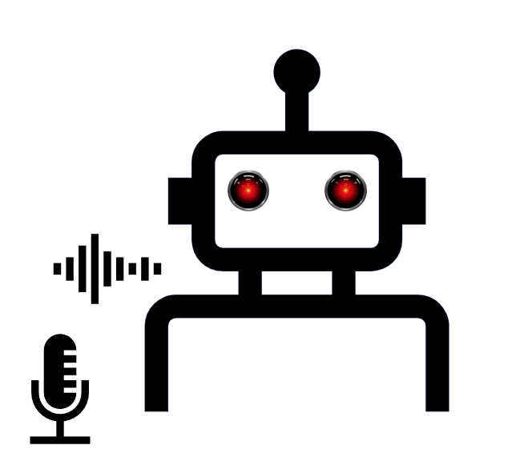

Welcome
I am an Associate Professor of AI for Defence and Security and a Royal Academy of Engineering UK Intelligence Community Research Fellow at the University of Lincoln, where I lead the research of the Centre for Defence and Security AI and the HIDE Lab, a hub for AI-based research on deception. I am also an Associate Researcher at Inria and a Faculty Affiliate at Ontario Tech (Trustworthy AI Lab).
Background
Previously, I was a Proleptic Lecturer (Assistant Professor) at King’s College London. Before that, I was a 3iA Postdoctoral Research Fellow at Inria/3iA Côte d’Azur and a Postdoc in the HASP lab at King’s. My background includes a PhD in AI from King's, an MSc in Cognitive Science from Edinburgh, and a BA in Philosophy from West University of Timisoara.
Research Interests
I study reasoning and behaviour of intelligent agents—human or machine—in hybrid societies. My research spans complex multi-agent systems, agent-based modelling, and neurosymbolic architectures, with a focus on deceptive AI, deception modelling, and self-explainable agents using Theory of Mind.

Selected Talks
- 2026: The Evolution of Deception — Science Gallery, London
- 2023: Understanding Deception in Hybrid Societies — CSIRO Data61
- 2023: Arms Race in Theory-of-Mind — ACSOS
- 2023: Working Alongside Deceptive Machines — ICSPP DSEI
- 2023: Should My Agent Lie for Me? — AAMAS
- 2022: Creating Deceptive Machines — Monash Cybersecurity Seminar